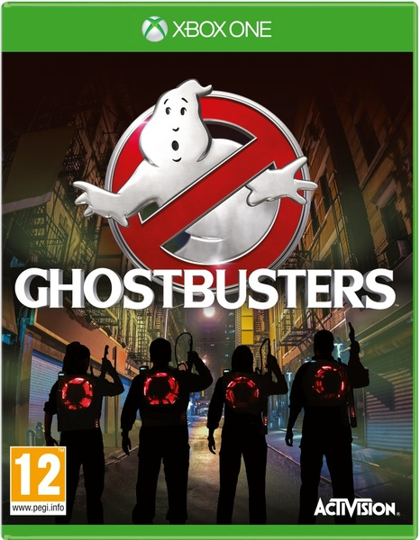
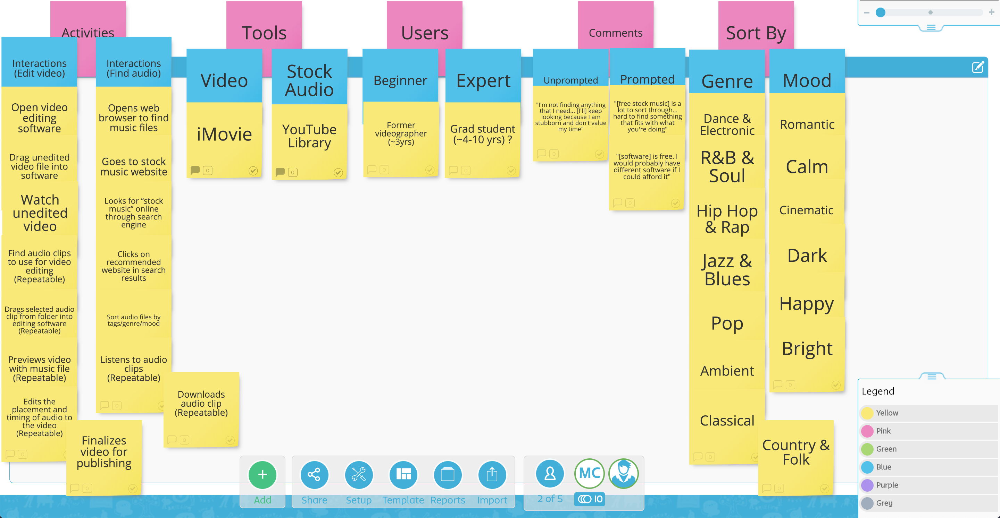
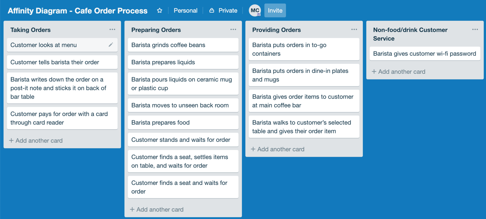
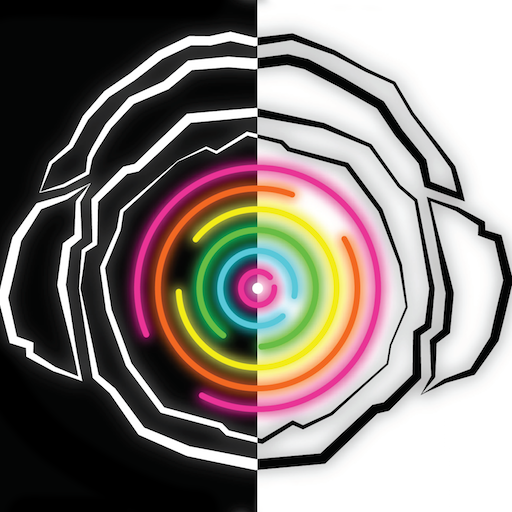

User Experience (UX)
Research: Ghostbusters (2016)
(5/2019) My Games User Research (GUR) group project conducted GUR methods for the game Ghostbusters (2016). So far, we have conducted a competitive review, heuristic evaluation, usability test, and playtest.
Research: Music for Stories
(3/2019) My UX Research Methods group project was about the process content creators go through to add music and additional auditory material to add to their material. We conducted observations, interviews, and surveys throughout this term-long project. This is the final report containing details about each stage of the process and our implications for design.
Includes: study protocols, statistical survey results, personas and scenariosDesign & Research: CollegePro

(11/2018) CollegePro was an Interaction Design group project. We conducted surveys for students to provide insight in prototyping and designing a website, CollegePro, that aims to centralize information resources regarding academic advising, career, and research in a personalized way and allows students to communicate with others.
Prototype Link: InVision Prototype
Research: Xbox Live Messaging Feature

(9/2018) My first go at usability evaluation for an existing system. I examined users of the Xbox Live (messaging system) and performed a heuristic analysis, cognitive walkthrough, and usability testing using video recording and note taking.
Research: Coffee Shop Observation
(1/2019) My first go at non-participant observation. I observed a local coffee shop and their process for handling orders. I used affinity diagramming to analyze my time-stamped field notes and created a sequence model of the overall process.
Includes: time-stamped field notes, AEIOU analysis, affinity diagramming, sequence model
Development
Mobile Dev: SoundCHK
(5/2017) Inspired by the rise of augmented reality (AR), my undergrad group capstone project was SounDCHK, a multimedia digital magazine app that implemented a QR Code Reader that accompanied a physical zine (which was also designed and published by my group). I did the wireframing, designing, and development of the mobile application.
Personal Website (this)
This website was designed and coded by me. It will be a lifelong ongoing project as my career progresses. ☺ My goal is to include search and filter features for the Projects and Blog sections and continuously improve on the design.